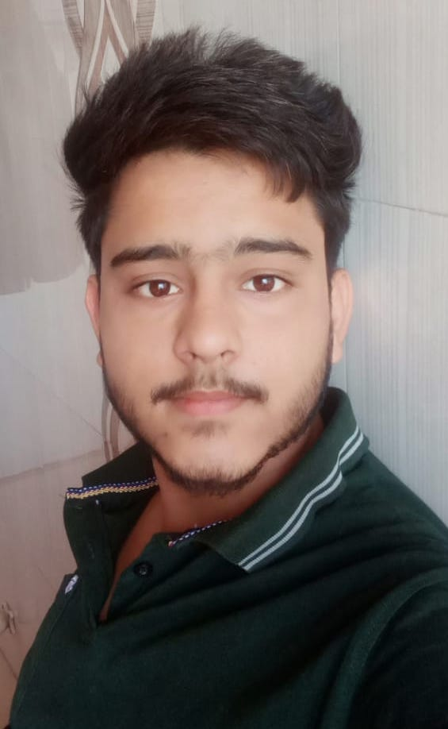

NAME: Yadav Satish Aparbal
HOMETOWN: Ahmendabad, Gujarat
DATE OF BIRTH: 22 May 2000
BLOOD GROUP: A+
I am currently pursuing Btech in Computer Science and Engineering from Indian Institute of Technology, Roorkee. I have completed my Higher Secondary Education in 2019 from GSEB Board. I was born and brought up in Ahmedabad Gujarat.
I have deep interest in competitive coding, web designing, application development. My favourite subjects are Astronomy and Mathematics. I enjoy reading aticles and novels, solving puzzles, playing badminton, cricket, football and snooker. I love watching movies and all kinds of sports from Squash to Hockey, from Golf to Wrestling.